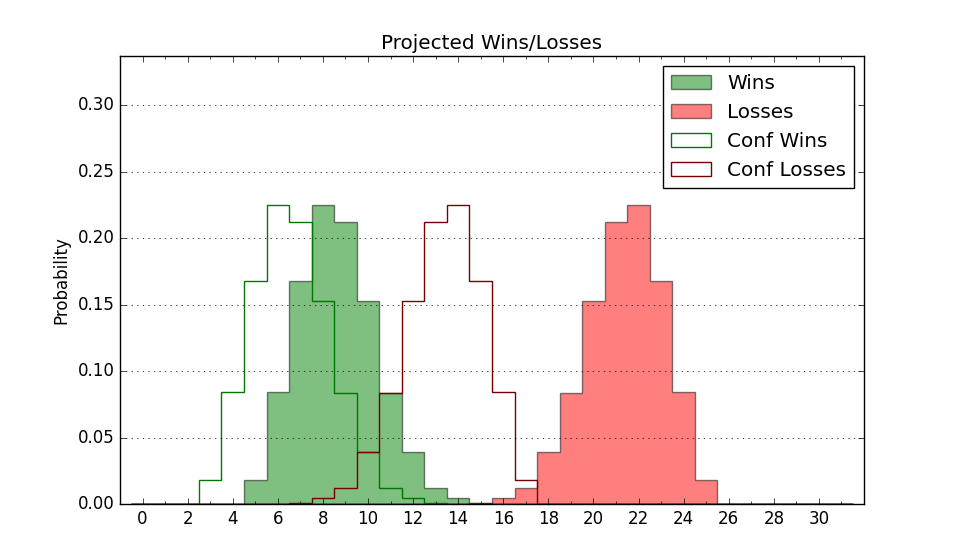

| Home | Game Probabilities | Conferences | Preseason Predictions | Odds Charts | NCAA Tournament |
| City: | Evansville, Indiana | |
| Conference: | Missouri Valley (12th)
| |
| Record: | 1-20 (Conf) 5-27 (Overall) | |
| Ratings: | Comp.: -20.9 (350th) Net: -20.9 (350th) Off: 88.4 (358th) Def: 109.4 (294th) SoR: 0.0 (141st) |
| Remaining | ||||||
|---|---|---|---|---|---|---|
| Date | Opponent | Win Prob | Pred. | |||
| Previous | Game Score | |||||
| Date | Opponent | Win Prob | Result | Off | Def | Net |
| 11/7 | @Miami OH (289) | 16.8% | W 78-74 | 12.8 | 11.6 | 24.4 |
| 11/12 | @Saint Louis (107) | 3.5% | L 65-83 | 4.5 | 0.4 | 4.9 |
| 11/16 | Southeast Missouri St. (255) | 34.0% | L 61-67 | -10.8 | 6.9 | -3.8 |
| 11/19 | @SMU (204) | 8.6% | L 47-55 | -20.0 | 29.8 | 9.7 |
| 11/23 | @UCF (65) | 1.7% | L 56-76 | 2.9 | 8.5 | 11.3 |
| 11/25 | (N) South Alabama (108) | 6.3% | L 67-78 | 15.7 | -4.8 | 10.9 |
| 11/26 | (N) Robert Morris (241) | 19.7% | W 54-53 | -2.8 | 17.7 | 14.9 |
| 11/27 | (N) Fairfield (253) | 21.8% | L 56-63 | -12.1 | 10.7 | -1.4 |
| 11/30 | Southern Illinois (127) | 13.2% | L 53-80 | -8.5 | -14.1 | -22.6 |
| 12/3 | @Northern Iowa (213) | 8.9% | L 55-72 | -6.0 | 6.1 | 0.0 |
| 12/7 | Campbell (237) | 30.3% | W 72-66 | 8.3 | 8.2 | 16.6 |
| 12/10 | @Ball St. (149) | 5.4% | L 69-88 | 8.6 | -8.1 | 0.6 |
| 12/21 | Bellarmine (267) | 36.0% | W 73-61 | 11.1 | 9.3 | 20.4 |
| 12/29 | @Indiana St. (88) | 2.6% | L 63-91 | 2.1 | -8.1 | -6.0 |
| 1/1 | Murray St. (216) | 25.4% | L 61-78 | -8.4 | -9.3 | -17.7 |
| 1/4 | @Missouri St. (136) | 4.7% | L 62-85 | 7.4 | -10.3 | -2.9 |
| 1/7 | Illinois St. (271) | 37.2% | L 61-69 | -10.9 | -1.0 | -11.9 |
| 1/11 | @Bradley (80) | 2.1% | L 46-91 | -10.0 | -14.3 | -24.3 |
| 1/14 | Valparaiso (287) | 40.4% | L 69-76 | 5.0 | -8.4 | -3.4 |
| 1/17 | @Southern Illinois (127) | 4.3% | L 70-77 | 12.8 | 12.6 | 25.4 |
| 1/21 | Drake (61) | 5.5% | L 61-97 | 3.5 | -25.6 | -22.1 |
| 1/25 | Belmont (118) | 11.9% | L 64-73 | -3.9 | 6.0 | 2.1 |
| 1/28 | @Valparaiso (287) | 16.6% | L 69-81 | 7.8 | -5.3 | 2.5 |
| 2/1 | Indiana St. (88) | 8.3% | L 65-83 | -0.9 | -7.8 | -8.7 |
| 2/4 | @Illinois Chicago (275) | 15.0% | L 61-70 | -2.2 | 8.9 | 6.7 |
| 2/8 | Northern Iowa (213) | 25.0% | W 71-59 | 8.0 | 23.8 | 31.8 |
| 2/12 | Missouri St. (136) | 14.4% | L 60-66 | 0.3 | 10.0 | 10.3 |
| 2/15 | @Belmont (118) | 3.8% | L 63-95 | -3.0 | -9.7 | -12.7 |
| 2/18 | @Murray St. (216) | 9.1% | L 58-74 | -1.4 | 1.4 | 0.0 |
| 2/22 | Illinois Chicago (275) | 37.5% | L 76-82 | 5.5 | -15.1 | -9.6 |
| 2/26 | @Illinois St. (271) | 14.8% | L 53-72 | -7.6 | -9.8 | -17.4 |
| 3/2 | (N) Indiana St. (88) | 4.7% | L 58-97 | -7.5 | -18.0 | -25.5 |
| Stats & Trends | |||||
|---|---|---|---|---|---|
| Current | Day | Week | Month | Season | |
| Composite | -20.9 | -- | -0.7 | -0.4 | -11.9 |
| Comp Rank | 350 | -- | -- | -1 | -83 |
| Net Efficiency | -20.9 | -- | -0.7 | -0.3 | -- |
| Net Rank | 350 | -- | -- | -- | -- |
| Off Efficiency | 88.4 | -- | -0.2 | -0.1 | -- |
| Off Rank | 358 | -- | -1 | -3 | -- |
| Def Efficiency | 109.4 | -- | -0.5 | -0.2 | -- |
| Def Rank | 294 | -- | -10 | +6 | -- |
| SoS Rank | 156 | -- | +14 | +26 | -- |
| Exp. Wins | 5.0 | -- | -0.1 | -0.0 | -6.2 |
| Exp. Conf Wins | 1.0 | -- | -0.1 | -0.0 | -6.0 |
| Conf Champ Prob | 0.0 | -- | -- | -- | -0.5 |

| Advanced Stats | ||
|---|---|---|
| Stat | Value | Rank |
| Off Eff FG % | 0.452 | 340 |
| Off Ast Ratio | 0.121 | 325 |
| Off ORB% | 0.181 | 356 |
| Off TO Rate | 0.159 | 220 |
| Off FT Ratio | 0.295 | 248 |
| Def Eff FG % | 0.550 | 327 |
| Def Ast Ratio | 0.164 | 321 |
| Def ORB% | 0.272 | 200 |
| Def TO Rate | 0.165 | 114 |
| Def FT Ratio | 0.309 | 169 |